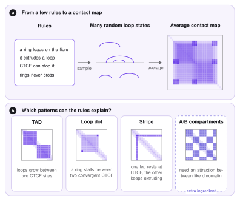

Scope: what the model explains¶
Before the details, let us ask a simple question: what do we want from a model of loop extrusion? This page sets the goal and explains the logic of the approach. The next pages then fill in the physics (Mechanics), the sampling (MCMC) and the 3D polymer (Molecular dynamics). For the biology of cohesin and CTCF, see Loop extrusion.
From rules to a heatmap¶
A Hi-C map is a matrix. Its entry \((i,j)\) counts how often two regions \(i\) and \(j\) of the genome were found close together in space. The map is full of patterns: squares along the diagonal, bright dots at their corners, thin lines called stripes, and a checkerboard. The model asks a generative question: which small set of rules produces these patterns, without drawing any of them by hand?
The rules of loop extrusion are few and easy to state. A ring (cohesin) loads on the chromatin fibre and extrudes a loop. CTCF can stop it. Rings do not cross each other. Because the process is random, a single moment in time shows just one random set of loops. The contact map is the average over many such sets: two regions are often in contact when many of the sets have a loop between them.

Which patterns can occur¶
TADs (topologically associating domains) are squares along the diagonal: regions that touch each other more than they touch their surroundings. They appear when loops grow between two boundaries and cannot leave the domain.
Loop dots are single bright points, usually at the corner of a domain. They appear when a ring is stalled at two anchors that face each other (convergent CTCF) and stays there for a long time.
Stripes are lines that start at one anchor. They appear when one leg of the ring is held at an anchor while the other keeps extruding, so that the anchor touches everything along one side.
A/B compartments form a checkerboard: active (A) and inactive (B) chromatin each prefer their own kind. Extrusion alone does not create them, and it even weakens them by mixing regions. They need an attraction between like chromatin, which LoopSage can add with the epigenetic model and the compartment force.
The inverse problem: from averages back to cohesins¶
So far we went forward: rules, then loops, then a map. The real situation is the opposite. An experiment gives us only the average, a Hi-C map pooled over millions of cells, and we want to recover what the individual cohesins were doing. This is an inverse problem, and it is the central difficulty of the whole approach.
Microstates and averages¶
Statistical physics separates two levels of description. A microstate is the complete configuration of the system at one moment. For loop extrusion it lists, for every cohesin ring, where its two legs are and how fast each leg moves. A macrostate (or thermodynamic average) is what we can measure without seeing the individual rings: the mean contact map, the average loop length, the average occupancy of an anchor. Writing \(x\) for a microstate and \(O(x)\) for a quantity computed from it, an average is
where \(P(x)\) is the probability of the microstate \(x\). The forward problem gives \(P(x)\) (from a model) and asks for \(\langle O\rangle\). The inverse problem of statistical mechanics gives \(\langle O\rangle\) (from data) and asks for \(P(x)\), or for the energy \(E(x)\) that produces it. In LoopSage the data are the entries of a contact map, a few hundred to a few thousand numbers, while a microstate has several numbers for each of tens or hundreds of rings, and \(P(x)\) has to be given for all of their combinations.
Why it is ill posed¶
A problem is well posed (in the sense of Hadamard) when a solution exists, is unique, and changes only a little when the data change a little. The inverse problem fails these tests in a way that is easy to see.
- Many microstates give the same average. Averaging throws information away. One ring that stays a long time between two anchors and several rings that visit it briefly give the same contact. Moreover, a map is a static picture, so it cannot tell a fast ring that unbinds often from a slow ring that unbinds rarely if they occupy the sites equally. The speeds of the legs are almost invisible in a steady-state average. The solution is not unique.
- Small errors in the data become large errors in the answer. A Hi-C map is built from a finite number of read pairs, so it is noisy, especially far from the diagonal. When the map is only weakly sensitive to a parameter, the data cannot pin it down, and a small change of the noise moves the fitted value a lot. The solution is not stable.
- The data may not be reproducible exactly. A noisy map may be a combination that no model can produce, so we can only ask for the closest solution, not an exact one.
Intuition
Imagine being given only the average arrival time of all trains in a country and being asked for the timetable of each train. Many timetables have the same average. You would need to add assumptions (how trains are scheduled, how many exist) before you could name one.
What makes it well posed¶
The cure is to add information so that exactly one answer remains. Two ingredients are standard.
- A known form for the energy. If we fix which quantities the energy depends on, the unknowns shrink from the whole distribution \(P(x)\) to a handful of coefficients \(\lambda_k\). The maximum entropy principle says to take, among all distributions that reproduce the measured averages, the one with the largest entropy, that is, the one that assumes nothing more than the data. It has the form \(P(x)\propto\exp\!\big(-\sum_k\lambda_k O_k(x)\big)\), the Boltzmann law of Mechanics, and with this form the fit has a single solution.
- More data than unknowns, and regularisation. Fewer coefficients than independent measurements, together with a mild preference for simple or small coefficients, keeps the answer stable against noise.
Our case is harder¶
LoopSage faces the ill-posed problem without the first ingredient. We do not know the functional form of the energy. Cohesin burns ATP and is out of equilibrium (Mechanics), so there is no reason why a simple Boltzmann energy exists, let alone which terms it has. We therefore propose an effective energy built from a few physically motivated terms (folding, binding, crossing), keep the number of coefficients small, and fit them to data with the optimizer. Two honest consequences follow.
- A good match between the predicted and the measured map shows that the model is consistent with the data, not that it is the only explanation. Different energy forms could fit equally well.
- The microstates that the sampler produces are an ensemble that agrees with the average, not a film of what a real ring did. Statements about averages (loop lengths, contact frequencies, stripes) are on solid ground, while statements about the speed or lifetime of a single ring are not.
The way to build trust is to test on information the fit did not use: other chromosome regions, other cell types, orthogonal measurements such as stripes, loop dots or a 3D structure, and to check how much the fitted coefficients change under noise.
The two questions¶
The model has to answer two different questions, and it uses a different tool for each.
- Which sets of loops are likely? This is a question about probabilities. It is answered by an energy function together with a Monte Carlo sampler (Mechanics and MCMC).
- What does the chromatin look like in 3D when a given set of loops is present? This is a question about motion and shape. It is answered by molecular dynamics of a polymer (Molecular dynamics).
What the model is, and what it is not
LoopSage is a statistical model of loops. It reproduces the distribution of loops and the average structure, but not the movie of one cohesin ring in real time. Its parameters (\(N_{\mathrm{lef}}\), the energy coefficients and the temperature) are effective numbers: they summarise the molecular details, and the optimizer can fit them to data.